Koh Samui: By ferry in the rain back to Koh Samui, Thailand's second-largest island. Last evening in Chaweng: Aperol by the roadside, Thai salad with orchids, posters for Muay Thai fights, crowded streets, a fire show on the beach.
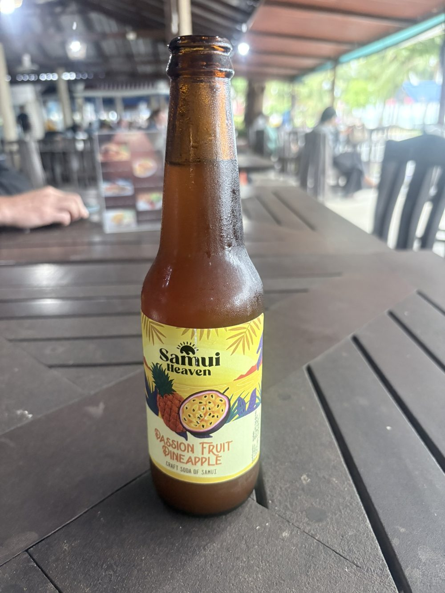
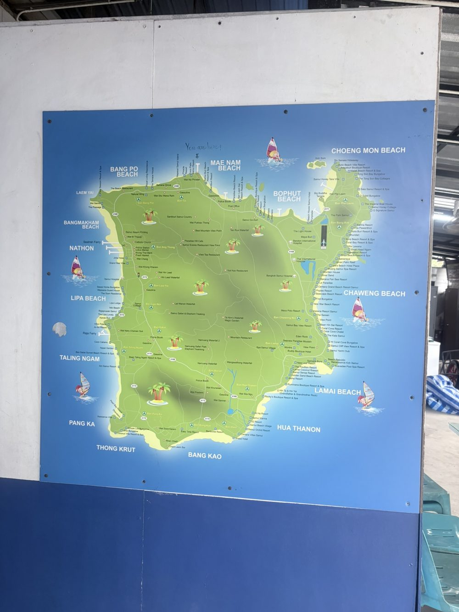
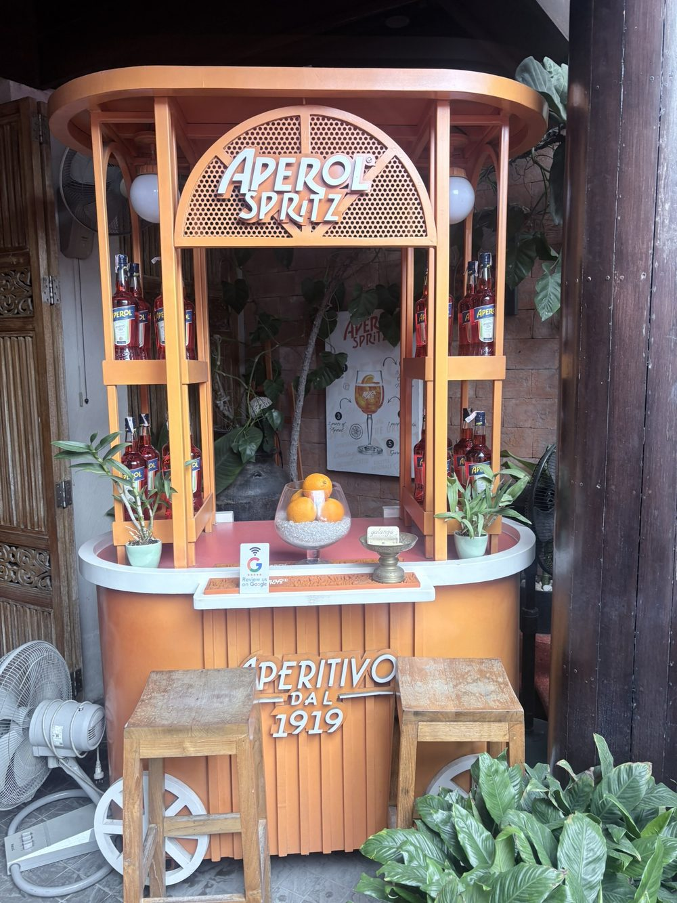
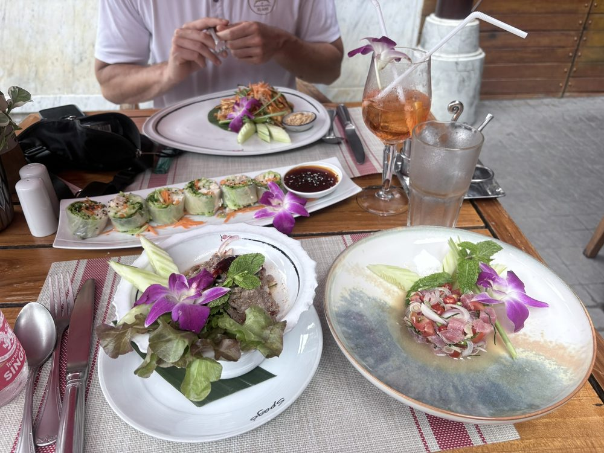
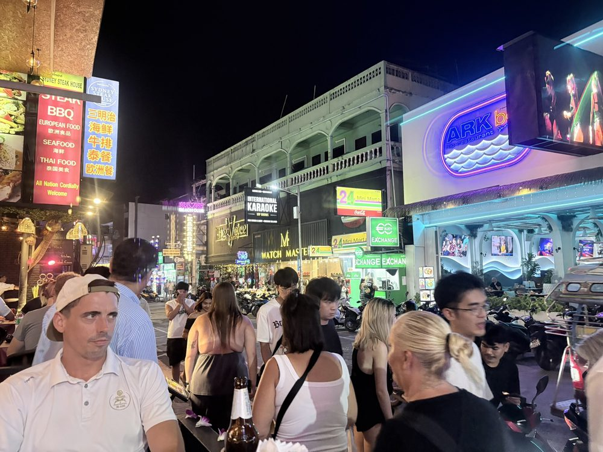
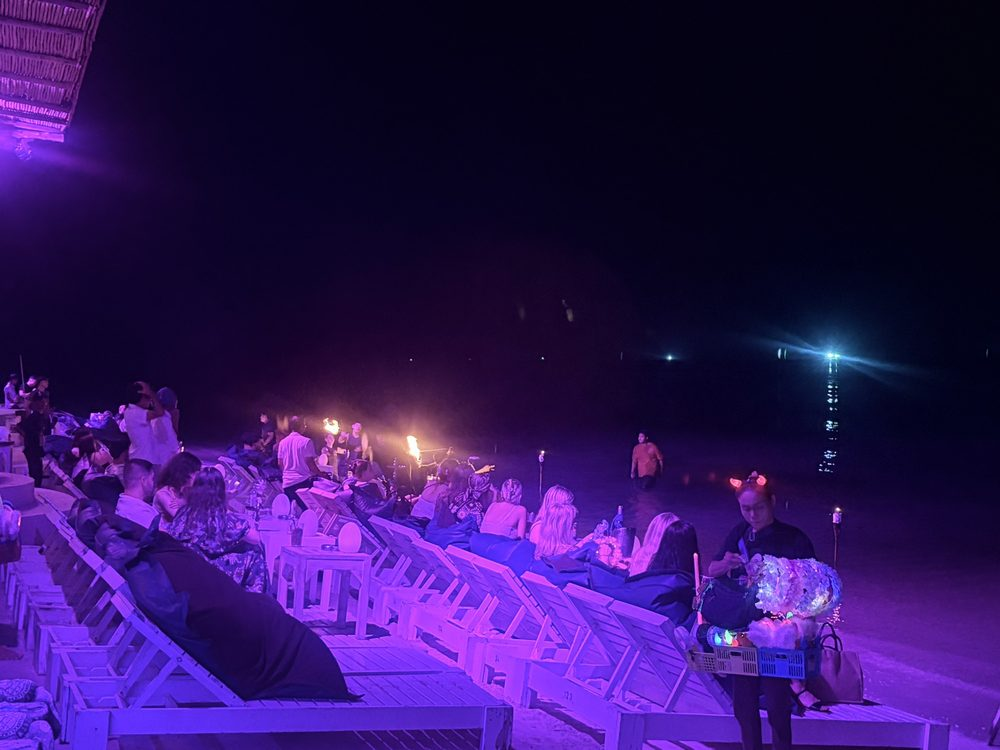
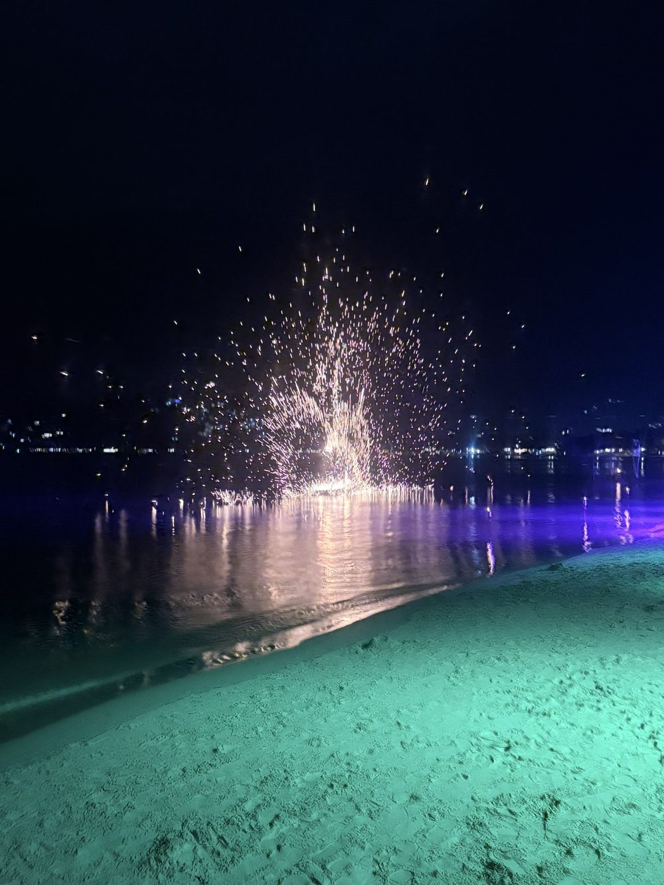
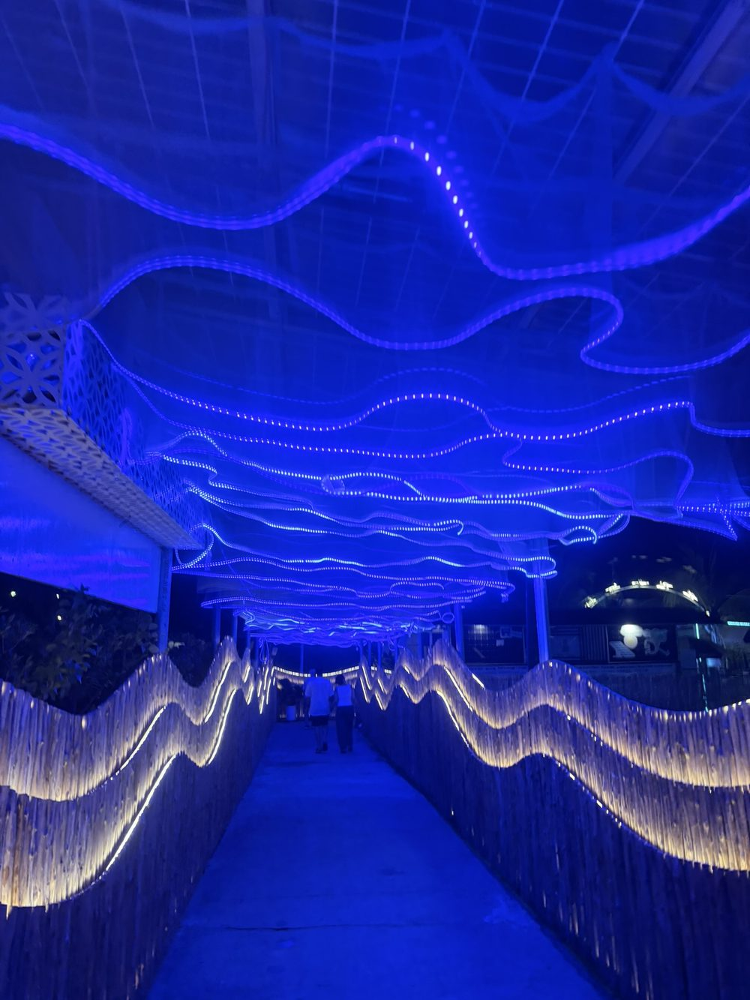
Journey home: On Sunday from Samui's open-air airport via Bangkok back to Frankfurt. Two weeks, two countries, whale sharks and a wreck – and a last look at the mountains below the wing.
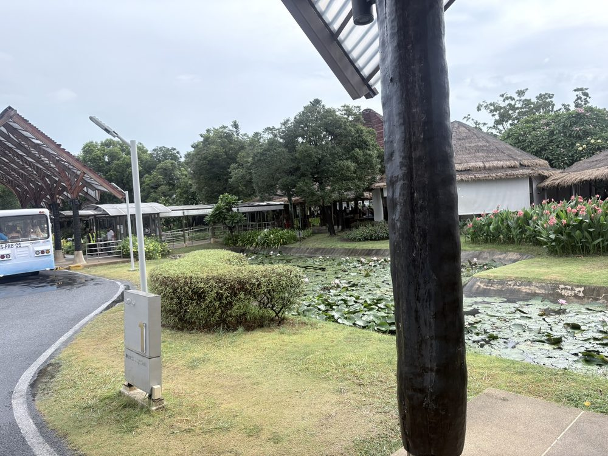
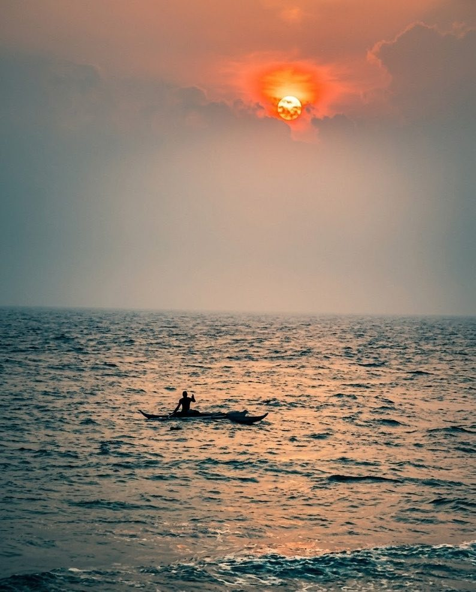
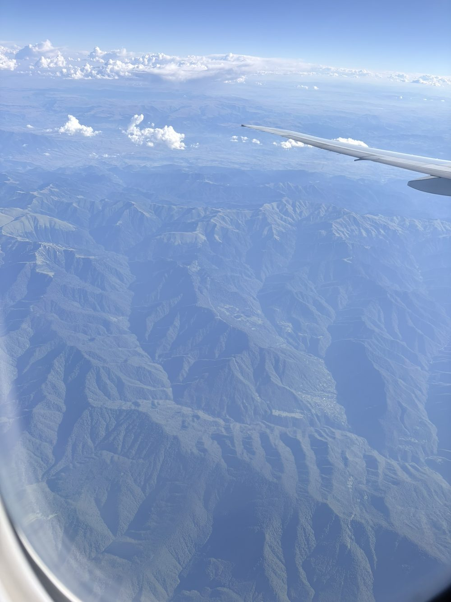